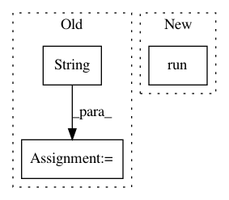

7229dd15b01e5015ec649a3264561fc01d39a16b,qiskit/aqua/utils/run_circuits.py,,run_on_backend,#Any#Any#Any#Any#Any#,358
Before Change
qobj.config.noise_model = noise_config["noise_model"]
job = backend.run(qobj, validate=False)
elif is_basicaer_provider(backend):
job_id = str(uuid.uuid4())
backend._set_options(qobj_config=qobj.config, **backend_options)
job = BasicAerJob(backend, job_id, backend._run_job, qobj)
job._future = job._executor.submit(job._fn, job._job_id, job._qobj)
else:
logger.info(
"Can"t skip qobj validation for the %s provider.",
backend.provider().__class__.__name__)
After Change
qobj.config.noise_model = noise_config["noise_model"]
job = backend.run(qobj, validate=False)
elif is_basicaer_provider(backend):
job = backend.run(qobj, **backend_options)
else:
logger.info(
"Can"t skip qobj validation for the %s provider.",
backend.provider().__class__.__name__)
In pattern: SUPERPATTERN
Frequency: 4
Non-data size: 3
Instances
Project Name: Qiskit/qiskit-aqua
Commit Name: 7229dd15b01e5015ec649a3264561fc01d39a16b
Time: 2021-03-17
Author: mtreinish@kortar.org
File Name: qiskit/aqua/utils/run_circuits.py
Class Name:
Method Name: run_on_backend
Project Name: facebookresearch/fastMRI
Commit Name: 05b2b1c02a8ce5f471877243ebebe5df876ccc37
Time: 2020-04-15
Author: tulliemurrell@gmail.com
File Name: models/unet/train_unet.py
Class Name:
Method Name: main
Project Name: tensorflow/minigo
Commit Name: bcb5c6478240973edbb7ac0316696486c067524c
Time: 2018-11-07
Author: dtj@google.com
File Name: bigtable_input.py
Class Name:
Method Name: histogram_move_keys_by_game
Project Name: HyperGAN/HyperGAN
Commit Name: 4dd8653c9fedc12091c8fe443b37ee9f521a207c
Time: 2017-06-27
Author: mikkel@255bits.com
File Name: examples/colorizer.py
Class Name:
Method Name: search